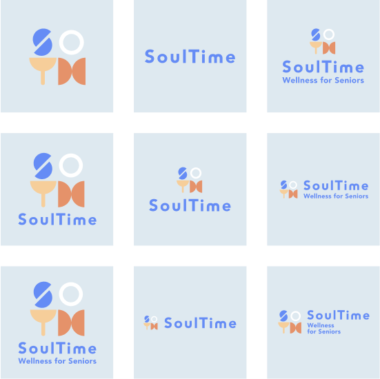
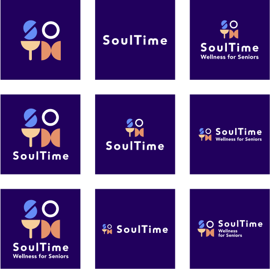
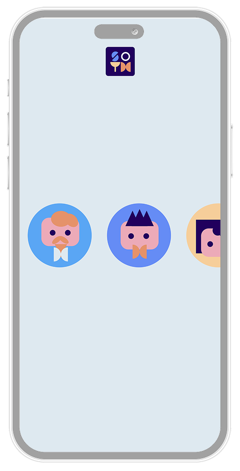
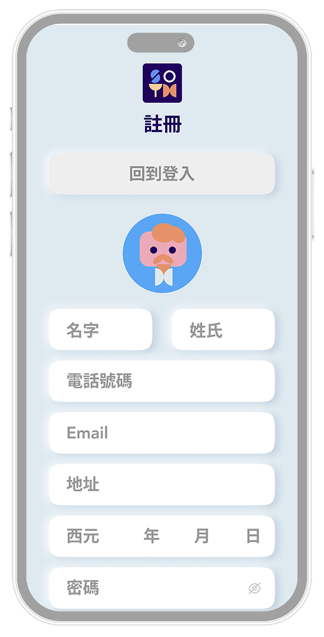

Soultime is a service-oriented mobile app developed from research on aging society, time banking, and age-friendly interface design. The project translates long-term care needs, social participation, and digital usability into a dual-platform system for elderly users and family members — combining service exchange, activity participation, health records, and family coordination in one visual and interaction framework.

Soultime begins from a clear gap: traditional care systems are limited by workforce shortage, while many existing digital products do not fully respond to elderly users' social participation, service access, and interface comprehension. The project treats time banking not only as a service model, but as a design framework for building mutual support, digital inclusion, and practical daily care.
Service
Exchange
System
Age-Friendly
Interface
Design
Dual-Platform
Family
Coordination
The brand does not frame elderly users as only recipients of care, but as participants who can request support, contribute time, join activities, and remain socially connected. The identity balances gentleness and trust while keeping functional clarity for service-based tasks.
Long-term care systems still rely heavily on professional labor and passive support, which limits flexibility and access in daily care scenarios.
Middle-aged and elderly users often face difficulty with layered navigation, low feedback clarity, and interfaces not aligned with their cognitive habits.
Many existing elderly care apps emphasize monitoring or medical support, but rarely provide meaningful systems for contribution, exchange, and social connection.
Reviews challenges brought by aging society — care demand expansion, family burden, limited social participation, and the need for accessible digital services.
Examined as a mutual support model where service hours become an exchange unit, creating both social value and practical care support for elderly communities.
International and applied principles consolidated into design criteria: layout hierarchy, iconography, typography, color perception, consistency, and accessibility.
Reviewed aging society, time bank models, and age-friendly interface guidelines to define the service gap and establish design criteria.
Compared Handy Guardian, Yodda Enable, and GrandPad to identify differences in service positioning, UI structure, interaction patterns, and visual strategy.
Interviewed 15 middle-aged and elderly participants aged 55–75 to collect smartphone habits, interface preferences, opinions on time banking, and desired app functions.
Converted research findings into persona, journey map, feature strategy, brand identity, site map, wireframe, and visual interface design.
15 interviewees in Northern Taiwan, aged 55 to 75. More than half had not previously participated in community service activities, but all had smartphone usage experience.
Participants used smartphones for an average of 3.75 hours per day, mainly for news, articles, communication, and social media — indicating familiarity with simple mobile operations.
Users emphasized operation guidance, navigation to service locations, calendar reminders, trust-building mechanisms, and easy access to service records.
Through literature analysis, case comparison, and qualitative interviews, the project confirms that a time-bank-based service app must respond not only to function, but also to readability, emotional reassurance, and actual service flow.
Few page levels, clear function divisions, generous white space, and full-screen content grouping to reduce cognitive load.
Concrete icons with text labels, consistent visual style, direct function reflection, and avoidance of overly abstract symbols.
Clear solid type, large type size around 20pt, strong contrast with background, simple wording, and the option to adjust text size.
Bright, low-saturation colors with clear contrast. The visual system should remain readable, calm, and not overload one screen with too many accents.
Flat visual language combined with subtle neumorphism or shadow cues where needed, maintaining coherence across buttons, cards, and image assets.
Large tap targets, rounded buttons, minimal text input burden, direct CTA patterns, and support through voice, captions, and feedback prompts.
The project transforms research findings into three design directions. First, it reconstructs time banking into an understandable service system through service application, invitation, confirmation, hour accumulation, and review feedback. Second, it creates a dual-platform structure addressing both elderly user participation and family-side coordination.
Third, it redefines elderly-friendly interface design as a practical combination of guidance, reassurance, readability, and controllable interaction — designing Soultime as a mutual-support service platform that combines care access, participation incentives, and a visual language soft enough for daily use.
Translate time currency into understandable service records, hour accumulation, and exchange flow accessible to elderly users.
Build a parallel family-side interface for activity tracking, health updates, and communication support without over-control.
Reduce operation burden through guided flows, large touch targets, and low-complexity information architecture.


Drag left or right to flip pages. Click EXPAND for fullscreen reading.


Supports registration and account entry, followed by a simple health confirmation and visual onboarding sequence to strengthen recognition and emotional tone.
Provides direct access to request help, help others, calendar, emergency call, profile, navigation, and chat from the first layer of the system.
Allows users to create new service requests, check progress, receive approval notifications, and add confirmed support to the schedule.
Displays nearby support needs and enables users to join community assistance through application and matching flow.
Shows confirmed orders, activities, and reminders through year, month, and day views, supporting predictable time planning.
Visualizes service expert, helping hand, and high-rating achievements to strengthen participation motivation and visible contribution.
Tracks service hours, transfer records, gifts, check-in, check-out, and redemption history as part of the time banking mechanism.
Supports route guidance to activity and service locations, reducing uncertainty and external dependence during travel.
Displays the latest record and historical summaries of mental, physical, and emotional conditions through simple chart-based feedback.
Creates direct communication between users and family or service-related contacts, supporting reassurance and coordination.
Allows family members to quickly review the elderly user's latest health entry, recent activity participation, and service status.
Links the home view to map and location-related guidance so that family members can understand route context without directly interfering in activity flow.
Connects directly to chat so that reminders, check-ins, and emotional support can happen through a familiar conversation pattern.
The family-side design is intended to reassure rather than over-control, keeping the elderly user's autonomy visible within the system.
On mobile or slower networks, opening the prototype in Figma directly may be more stable.
The family version shifts focus from personal reflection to shared awareness — emotional status, daily conditions, and collaborative care routines.
The project translates the abstract concept of time banking into understandable service records, exchange flow, and reward logic for elderly users.
By developing both Soultime and Soultime Family, the project addresses not only elderly use but also family-side reassurance and coordination.
The visual and interaction rules are directly grounded in literature, case analysis, and interviews rather than purely stylistic preference.
Soultime confirms that the combination of time banking logic and age-friendly interface design can respond to both service access and social participation. The project does not simply create a care app, but proposes an alternative digital environment where elderly users can request help, contribute, connect, and remain visible within a mutual support network.
As a project outcome, the app also establishes a visual and structural foundation that can be extended into future testing, service collaboration, and exhibition display. The prototype, brand identity, and interface system together form a coherent design proposal grounded in both research and practice.

Soultime proposes an alternative digital environment where elderly users can request help, contribute, connect, and remain visible within a mutual support network — grounded in both research and practice.
